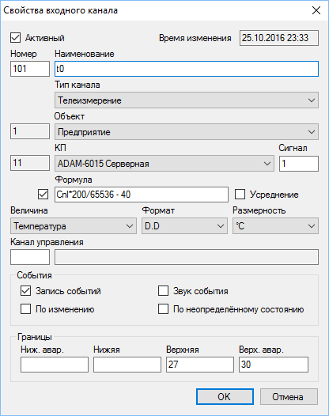

, и база конвертируется в специально разработанный формат DAT для использования остальными приложениями комплекса. Такой подход позволяет модифицировать базу конфигурации, не останавливая работу комплекса.
, и база конвертируется в специально разработанный формат DAT для использования остальными приложениями комплекса. Такой подход позволяет модифицировать базу конфигурации, не останавливая работу комплекса.База конфигурации представляет собой структурированное описание всей автоматизированной системы. Программы, входящие в состав Rapid SCADA, используют информацию из базы конфигурации в сочетании со своими параметрами настройки.
База конфигурации редактируется с помощью программы Администратор. Редактируемый экземпляр базы конфигурации имеет формат SDF (Microsoft SQL Server Compact Edition). После того, как внесение необходимых изменений завершено, администратор системы нажимает кнопку , и база конвертируется в специально разработанный формат DAT для использования остальными приложениями комплекса. Такой подход позволяет модифицировать базу конфигурации, не останавливая работу комплекса.
База конфигурации состоит из таблиц, которые, в свою очередь, состоят из столбцов и строк. Каждая таблица относится к одной из следующих групп:
Далее приводится перечень таблиц базы конфигурации с их назначением.
| Таблица | Назначение |
|---|---|
| Система | |
| Объекты | Содержит логические объекты, к которым привязываются входные данные и команды управления |
| Линии связи | Описывает физические линии связи, по которым производится обмен данными с устройствами |
| КП | Содержит контролируемые пункты (КП) - физические или мнимые устройства, с которыми происходит обмен данными |
| Входные каналы | Определяет входные данные системы, поступающие с устройств, а также значения, вычисляемые на их основе |
| Каналы управления | Определяет команды, выполняемые системой |
| Роли | Содержит роли - набор функциональных возможностей, доступных пользователям |
| Пользователи | Содержит перечень пользователей системы с указанием ролей |
| Интерфейс | Содержит описание объектов интерфейса (представлений, отчётов и окон данных), на которые требуется разграничение прав доступа |
| Права | Определяет права ролей на объекты интерфейса |
| Справочники | |
| Типы каналов | Справочник типов входных каналов |
| Типы команд | Справочник типов команд, которые могут использоваться каналами управления |
| Типы событий | Справочник типов событий системы, которые соответствуют статусам значений входных каналов |
| Типы КП | Справочник типов КП (устройств) |
| Величины | Справочник измеряемых физических величин |
| Размерности | Справочник размерностей значений входных каналов, а также перечислимые значения каналов |
| Значения команд | Справочник значений команд, которые вызываются посредством каналов управления |
| Форматы чисел | Справочник форматов, используемых при выводе значений входных каналов |
| Формулы | Справочник формул, используемых при расчётах данных входных каналов и значений команд каналов управления |
Заполнение базы конфигурации в программе Администратор выполняется в следующей последовательности:
 . Кроме того, приложение Администратор автоматически сохраняет копию базы при передаче Серверу.. Данная команда выполняет конвертирование базы в формат DAT.
. Кроме того, приложение Администратор автоматически сохраняет копию базы при передаче Серверу.. Данная команда выполняет конвертирование базы в формат DAT.Создание базы конфигурации можно значительно ускорить, если использовать сделанные ранее наработки. Для обмена информацией между различными базами программа Администратор имеет функции Экспорт и Импорт, которые вызываются из меню База данных. Таблицы экспортируются в файлы формата DAT, после чего информация может быть импортирована из этих файлов в ту же самую или другую базу конфигурации. Существует возможность ограничить перечень выгружаемых и закачиваемых данных, задав начальный и конечный идентификаторы (рис. 1). Кроме того, если при импорте указать новый начальный идентификатор, то импорт данных выполнится со смещением номеров идентификаторов.

Рис. 1. Импорт данных в базу конфигурации
Сервис создания каналов (рис. 2), доступный в меню Сервис, позволяет быстро заполнить таблицы Входные каналы и Каналы управления, используя введённые объекты и КП. Правила создания каналов содержатся в библиотеках КП (драйверах) программы Коммуникатор, расположенных по умолчанию в директории C:\SCADA\ScadaComm\KP\. Если какой-либо файл DLL, указанный в таблице Типы КП, не существует, то создание каналов для КП соответствующего типа невозможно. При создании каналов используются настройки КП, введённые в Коммуникаторе.
Чтобы создать входные каналы и каналы управления, необходимо отметить КП, для которых создаются каналы, выбрать или оставить неопределённым объект для каждого КП, нажать кнопку Рассчитать номера каналов, проконтролировать рассчитанные номера и затем нажать кнопку Создать.

Рис. 2. Создание каналов
Сервис клонирования каналов (рис. 3) также предназначен для ускорения заполнения таблиц Входные каналы и Каналы управления. В процессе клонирования каналов значения объектов и КП могут быть заменены другими.

Рис. 3. Клонирование каналов
Редактирование входных каналов доступно как в табличном виде, так и на форме свойств входного канала, вызов которой производится из контекстного меню по правому щелчку мыши на таблице входных каналов (рис. 4).

Рис. 4. Редактирование свойств входного канала
Функция упаковки позволяет уменьшить размер SDF-файла базы конфигурации, когда её редактирование завершено. Данная функция доступна через главное меню База данных > Упаковать.